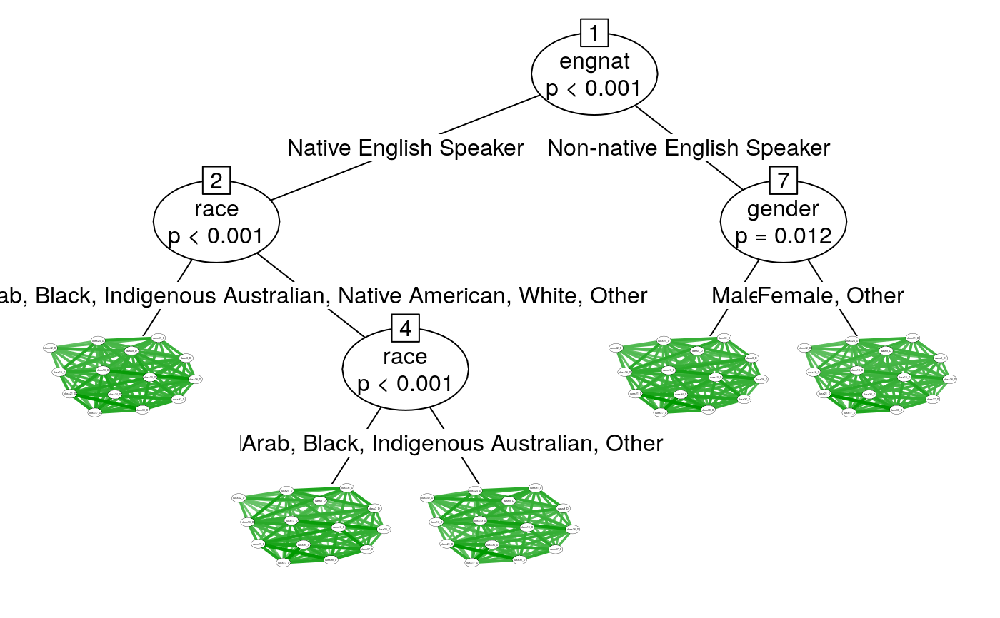

dass.RdThis dataset includes a randomly selected subsample of 5000 online participants who participated in a questionnaire available through the Open Source Psychometrics Project (https://openpsychometrics.org/), an organization that maintains an open website for the public to take psychometric tests for educational and entertainment purposes
dass
a dataframe. Columns represent questionnaire items and rows represent individuals
The Depression Anxiety and Stress Scale (DASS) is a self-report instrument for measuring depression, anxiety, and tension or stress. Each of 42 items falls into one of the three corresponding subscales.
Labels for DASS items in this dataset are denoted by the prefix "dass" and the suffix "_D", "_A", or "_S", indicating the depression, anxiety, or stress subscale.
Also includes demographics such as country, education level, rearing environment (urban/suburban/rural), gender, English as a native language, age, religion, sexual orientation, race, voting status, marriage status, and number of children in one's family during childhood.
The full dataset is publicly available at https://openpsychometrics.org/_rawdata/DASS_data_21.02.19.zip and can be cited as:
OpenPsychometrics (2019). Depression Anxiety and Stress Scale Survey. Retrieved from https://openpsychometrics.org/_rawdata/DASS_data_21.02.19.zip
head(dass)#> dass1_S dass2_A dass3_D dass4_A dass5_D dass6_S dass7_A dass8_S dass9_A #> 10639 3 3 4 4 4 4 3 3 4 #> 15111 3 3 3 1 4 4 2 2 3 #> 22811 3 3 3 1 4 3 1 4 3 #> 36136 3 1 2 1 2 3 1 3 2 #> 8139 1 1 2 2 1 1 1 1 1 #> 35740 4 2 2 3 3 4 2 4 3 #> dass10_D dass11_S dass12_S dass13_D dass14_S dass15_A dass16_D dass17_D #> 10639 3 4 3 4 3 2 3 3 #> 15111 4 3 2 4 4 1 3 3 #> 22811 2 3 1 3 3 1 3 3 #> 36136 2 3 3 3 3 1 2 3 #> 8139 1 2 1 2 2 1 1 2 #> 35740 3 4 4 4 3 2 3 4 #> dass18_S dass19_A dass20_A dass21_D dass22_S dass23_A dass24_D dass25_A #> 10639 3 3 4 4 2 4 4 3 #> 15111 3 1 2 2 3 3 3 1 #> 22811 3 2 2 3 3 1 3 2 #> 36136 3 3 3 2 2 2 2 1 #> 8139 1 1 3 2 2 1 2 1 #> 35740 4 3 4 3 3 2 3 4 #> dass26_D dass27_S dass28_A dass29_S dass30_A dass31_D dass32_S dass33_S #> 10639 3 4 3 4 2 3 1 4 #> 15111 4 2 1 4 3 4 3 2 #> 22811 3 3 1 4 2 3 2 2 #> 36136 2 3 3 2 2 2 2 2 #> 8139 2 2 1 2 2 1 1 2 #> 35740 3 4 4 3 2 4 2 4 #> dass34_D dass35_S dass36_A dass37_D dass38_D dass39_S dass40_A dass41_A #> 10639 4 2 3 4 4 4 4 3 #> 15111 3 4 2 4 4 3 1 1 #> 22811 2 3 3 2 3 2 3 1 #> 36136 2 2 2 2 3 2 3 2 #> 8139 2 1 2 2 1 1 1 1 #> 35740 4 2 3 4 4 2 4 2 #> dass42_D country education urban gender #> 10639 4 US High school Rural Female #> 15111 4 MY University degree Rural Female #> 22811 3 MY Graduate degree Urban Female #> 36136 2 MY University degree Suburban Female #> 8139 1 MY University degree Urban Female #> 35740 3 BN University degree Suburban Male #> engnat age religion orientation race #> 10639 Native English Speaker 18 Christian (Catholic) Bisexual White #> 15111 Non-native English Speaker 33 Muslim Heterosexual Asian #> 22811 Non-native English Speaker 25 Muslim Heterosexual Asian #> 36136 Non-native English Speaker 22 Muslim Heterosexual Asian #> 8139 Native English Speaker 21 Muslim Asexual Asian #> 35740 Non-native English Speaker 20 Muslim Heterosexual Asian #> voted married familysize Depression Anxiety Stress dasssum #> 10639 No Never married 2 51 45 44 140 #> 15111 No Currently married 3 49 25 42 116 #> 22811 Yes Never married 7 40 26 39 105 #> 36136 Yes Never married 6 31 27 36 94 #> 8139 No Never married 4 22 19 20 61 #> 35740 No Never married 4 47 40 47 134## Example networktree with DASS data(dass) ## Select depression subscale nodeVars <- colnames(dass)[(grep("_D", colnames(dass)))] splitVars <- c("gender","orientation","race","married","engnat") myTree<-networktree(dass[,nodeVars], dass[,splitVars]) myTree#> Network tree object #> #> Model formula: #> dass3_D + dass5_D + dass10_D + dass13_D + dass16_D + dass17_D + #> dass21_D + dass24_D + dass26_D + dass31_D + dass34_D + dass37_D + #> dass38_D + dass42_D ~ gender + orientation + race + married + #> engnat #> #> Fitted party: #> [1] root #> | [2] engnat in Native English Speaker #> | | [3] race in Asian #> | | [4] race in Arab, Black, Indigenous Australian, Native American, Other, White #> | | | [5] race in Arab, Black, Indigenous Australian, Other #> | | | [6] race in Native American, White #> | [7] engnat in Non-native English Speaker #> | | [8] gender in Male #> | | [9] gender in Female, Other #> #> Number of inner nodes: 4 #> Number of terminal nodes: 5 #> Number of parameters per node: 91 #> Objective function: 70537.5plot(myTree)